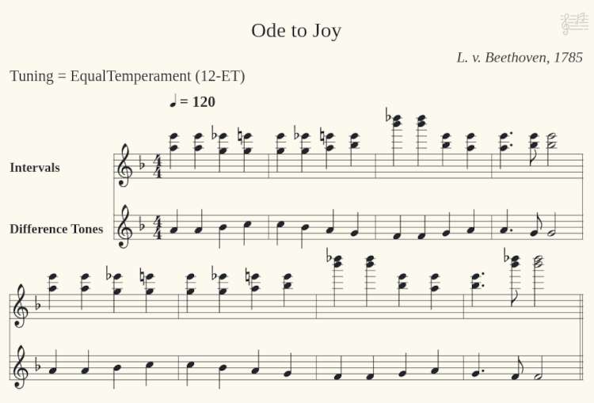
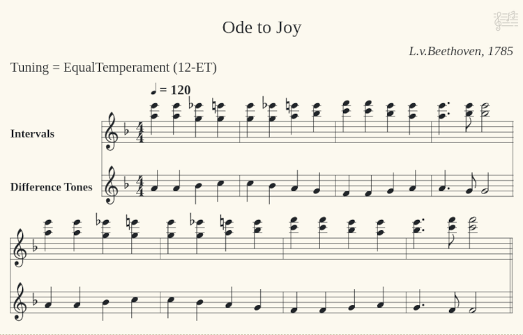

This is about composing difference-tone intervals for a melody. It is the most complex application of this project.
Click the top-left button "Compose Difference-Tone Intervals for a Melody". A new window opens.
In the new window, right-click into the top left text-area and click "Load Examples" in the context-menu. Select "Ode to Joy", this is in the key of F. You could use "Transpose" to move it to another key.
Notes are in text-area now. Interval lists fill the lower part of the UI that was initially empty. Their number is the same as the number of notes in the melody.
Optionally you can play the melody now by clicking the "Play Notes" player button on top left, this is the 4th button from left. Click it again to stop the playback.
Click "Auto-Compose" on the very right. The top right text-area is filled with intervals now. In the interval lists below, the auto-composed intervals were selected.
Optionally you can play the intervals by clicking the "Play Notes" player button on top right. This will play the intervals, not the difference-tones. The piano keyboard displays any 'pressed' key and marks the resulting difference-tone with a red border. (Although it looks like, it does NOT play the difference-tone!)
Listen carefully. You should hear the melody sound below the intervals.
Click "ABC Export" below the top right text-area. A dialog opens. Select an "ABC Converter" on botton right, the selected web-address will be copied to the system clipboard automatically. Go to your web-browser and paste (Ctrl-V) the address in its address-line on top.
Go back to the dialog. Enter "Title", "Key", "Author", "Date" fields and click "Translate" on bottom. The new content of the right-side text-area gets copied to the system clipboard automatically.
Go to your web-browser and paste (Ctrl-V) the ABC notes into the according area. Printable notes should be rendered by the ABC converter now, like the ones below:
You can see that the intervals for 9th and 10th tone (F4) are quite high in relation to all other notes. The algorithm's calculations were 'too technical'. You want to correct that manually.
Close the "Export" dialog. To change all occurrences of F4 with one click, find the "Reuse Open Lists" on bottom left and deactivate it. The number of interval-lists will reduce dramatically to just 5 different notes of the melody. You can also activate the "Sort Lists by Pitch" checkbox to get the F4 interval list to the left side.
In the F4 list, click onto the second interval from top, which is [C6 F6]. All occurrences of F4 in the top right intervals text-area will change.
Once again click the right-side "ABC Export". The recently entered properties like "Title" are already there, you can immediately go to your web-browser and paste the automatically copied ABC notes. Result should be this:
Why is the "Tuning" on the notes? Difference-tones depend on tuning. If you'd play these intervals in another tuning than EqualTemperament, the melody would sound out-of-tune. You'd get different intervals if you chose a JustIntonation tuning in the top bar on the left side. All three of "Tuning", "Deviation", "Narrowest/Widest Interval" affect the set of possible intervals for a difference-tone.
This is about (1) perceiving difference-tones and (2) verifying the "law of nature" that intervals described by simple fractions are more harmonious than others.
Sliders with a precision of 4 cent (a semitone has 100 cent) give more freedom than a 12-tone piano keyboard, and it is easier to hear a difference-tone when it is moving. You can move the slider by mouse drag, or by right click onto the desired location, or by continually left clicking until the slider arrives at the desired position. CURSOR-LEFT and CURSOR-RIGHT keys work like left click when the slider has input focus.
Click the top-right button "See Intervals and Their Difference-Tones on Frequency Sliders". A new window opens. Mind that its tuning is LIMIT_5 JustIntonation, not EqualTemperament, because the former produces cleaner difference-tones with less deviation.
There are two sliders that are set to D6 and C6 (interval MAJOR_SECOND), which gives a difference-tone of C3, shown in the 3rd bottom slider (disabled). The exact match of a tone is shown in red color on every slider. If you switch the "Tuning" to EqualTemperament, you will see how the frequencies change, and the C3 difference-tone on bottom disappears. The sliders are programmed to keep their note when their value is exactly on a red value, or else to keep their frequency when being somewhere in between.
Switch the "Tuning" back to LIMIT_5 JustIntonation. Click the "Play / Halt 1+2" button on top left. The interval tones will start to sound and will generate the low difference-tone C3. If you are not able to hear the low tone, click "Play / Halt 1+2" again to stop, then click "Play 1-2" on bottom left to hear the low tone alone.
Start the interval again. Now slowly move the C6 slider (the second from top) to the left. You will hear the low difference-tone rise quite fast. You can also see it rise on bottom on the disabled slider. This slider coupling also works without sound. The nearer the interval sliders are to each other, the deeper the difference tone will be, and vice-versa.
Stop the sound. Move the topmost C6 slider up to D6, so that both interval tones are exactly the same. Use a right mouse click to move it roughly near D6, then continuously click with left button until it is getting red on D6.
Now start the sound again via "Play / Halt 1+2". Use left mouse clicks to move the topmost slider slowly to the left (down). You will hear so-called beatings. The vibrations get stronger the more you move to the left, until it reaches C6, here the difference tone C3 will start to rise again on the bottom slider.
If you want to adjust a slider to a certain tone, enter its IPN name in one of the white text fields on top left.
If you are interested in just-intonation fractions, you can see them on top right in the "Pure Fraction" field. If you want to set a certain fraction, you can do it in the white "Enter Fraction" field to its right. Pressing ENTER will shorten the fraction and set both sliders to that relation. Just intonations are built on fractions.
Click onto the horizontal bar above the bottom slider (it has a triangle-arrow in its middle). An area opens that shows the second and third difference tone, you must resize the window to see it fully. These are barely audible, but the UI also calculates and displays them.
If you try out all the interval fractions in EqualTemperament, you will find out that nearly none of difference-tones matches the 12-tone scale, not even 2/3 (FOURTH) and 3/2 (FIFTH). The 5/4 (MAJOR_THIRD) and 6/5 (MINOR_THIRD) are really far away, while all of them match perfectly in LIMIT_5 JustIntonation. This is what I described as "We gave up harmony in favor of freedom" (the shift from just-intonation to equal-temperament in the 20th century).